철도신호기사 (2015-03-08 기출문제)
1과목: 전자공학
1. 부울대수에 관한 정리가 성립되지 않는 것은?
- AB=A(A+B)
- A+B=B+A
- A+BC=(A+B)(A+C)
- A(B+C)=AB+AC
(정답률: 87%)

2. 전력증폭기의 직류공급전압은 12V, 400mA이고 능률은 60%일 때 부하에서의 출력전력[W]은?
- 0.5
- 1.44
- 2.88
- 5
(정답률: 90%)
3. 다음 연산증폭기의 설명으로 틀린 것은?
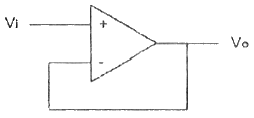
- V0=Vi
- 귀환저항이 0
- 저 임피던스 전원을 고 임피던스 전원으로 변경하는데 사용
- 버퍼 또는 전압 팔로워라고도 한다.
(정답률: 91%)
4. 그림과 같은 회로에서 V0는 약 몇 [V]인가?
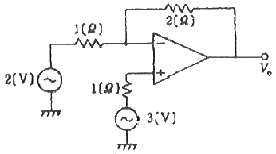
- 2
- 3
- 4
- 5
(정답률: 72%)
5. 주파수변조(FM)에서 S/N 비를 높이기 위한 방법으로 거리가 먼 것은?
- 변조지수 β를 크게 한다.
- 신호파의 진폭을 크게 한다.
- 최대주파수 편이를 크게 한다.
- pre-emphasis를 사용한다.
(정답률: 78%)
6. 그림과 같은 MOS 게이트의 기능을 나타내는 논리식은? (단, 부논리인 경우이다.)
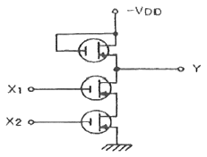
- Y=X1+X2
- Y=X1·X2
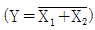
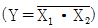
(정답률: 72%)
7. 이상적인 연산증폭기의 특성으로 0(zero)이 되어야 하는 것은?
- 입력 오프셋 전압
- 입력 임피던스
- 주파수 대역폭
- open loop 이득
(정답률: 73%)
8. 부궤환 증폭기의 특징에 해당하지 않는 것은?
- 주파수 특성이 좋아진다.
- 비선형 일그러짐이 감소한다.
- 잡음이 감소한다.
- 안정도가 낮아진다.
(정답률: 80%)
9. B급 푸시풀 증폭기의 출력 파형에 나타나는 고조파는?
- 기수 고조파
- 우수 고조파
- 제2, 제3 고조파
- 기수와 우수의 모든 고조파
(정답률: 62%)
10. 300[W]의 반송파 전력을 갖는 AM 송신기가 85%의 변조도를 갖는다면, 피변조파의 전력은 약 몇 [W]인가?
- 346
- 408
- 450
- 521
(정답률: 69%)
11. 증폭도가 30[dB], 잡음지수가 5[dB]인 전치증폭기를 증폭도가 20[dB], 잡음지수가 4[dB]인 주 증폭기에 연결할 때 종합잡음지수 [dB]는?
- 5.1
- 5.4
- 5.5
- 5.7
(정답률: 72%)
12. 16진수 (A2F)16을 10진수로 변환하면?
- (1607)10
- (1807)10
- (2207)10
- (2607)10
(정답률: 78%)
13. 다음 중 RC 발진기에 속하지 않는 것은?
- 이상형 발진기
- 빈 브리지(Wien bridge) 발진기
- 터민(Terman)형 발진기
- 클랩(Clapp) 발진기
(정답률: 66%)
14. 증폭기의 입력전압을 2mV 만큼 변화시켰더니 출력전압이 4V가 되었다. 이 증폭기의 이득은 약 몇 [dB]인가?
- 0.66
- 6.6
- 66
- 660
(정답률: 79%)
15. 발진회로의 발진주파수를 신호파의 진폭에 비례해서 직접 변화시키는 방식은?
- 직접 AM 방식
- 직접 PM 방식
- 직접 PCM 방식
- 직접 FM 방식
(정답률: 70%)
16. 어떤 2진 카운터를 이용하여 255까지 카운트하려고 한다. 이 경우 모듈러스(modulus)와 최소로 필요한 플립플롭의 개수가 순서대로 옳은 것은?
- 255.8
- 256.8
- 255.9
- 256.9
(정답률: 71%)
17. JK 플립플롭의 동작에 대한 설명으로 옳지 않은 것은?
- J=0, K=0일 때는 변하지 않는다.
- J=0, K=1일 때는 Q가 0으로 된다.
- J=1, K=0일 때는 Q가 1로 된다.
- J=1, K=1일 때는 반전되지 않는다.
(정답률: 81%)
18. 정현파 신호 v=20sin(50πt)[V]의 주기 [sec]는?
- 0.4
- 0.04
- 0.02
- 0.2
(정답률: 72%)
19. 위상변조에서 변조지수 βp=5, 변조 신호주파수 fn=4[kHz]일 때 최대 주파수 편이 [kHz]는?
- 5
- 10
- 15
- 20
(정답률: 80%)
20. FM에서 다음의 변조지수 중 대역폭이 가장 넓은 것은?
- 1
- 2
- 3
- 4
(정답률: 85%)
2과목: 회로이론 및 제어공학
21. 어느 소자에 걸리는 전압은 v=3cos3t(V)이고, 흐르는 전류 i=-2sin(3t+10°)(A) 이다. 전압과 전류간의 위상차는?
- 10°
- 30°
- 70°
- 100°
(정답률: 57%)
22. 대칭 n상에서 선전류와 상전류 사이의 위상차(rad)는?
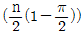
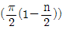
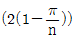
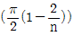
(정답률: 61%)
23. 다음과 같은 왜형파의 실효값(V)은?
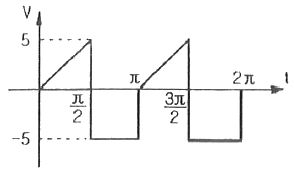
- 5√2
- 10/√6
- 15
- 35
(정답률: 35%)
24. 그림과 같은 단위 계단 함수는?
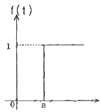
- u(t)
- u(t-a)
- u(a-t)
- -u(t-a)
(정답률: 70%)
25. 권수가 2000회이고 저항이 12Ω인 솔레노이드에 전류 10A를 흘릴 때, 자속이 6×10-2Wb가 발생하였다. 이 회로의 시정수(sec)는?(오류 신고가 접수된 문제입니다. 반드시 정답과 해설을 확인하시기 바랍니다.)
- 0
- 0.1
- 0.01
- 0.001
(정답률: 33%)
26. 자기 인덕턴스 0.1H 인 코일에 실효값 100V, 60Hz, 위상각 0°인 전압을 가했을 때 흐르는 전류의 실효값은 약 몇 A인가?
- 1.25
- 2.24
- 2.65
- 3.41
(정답률: 47%)
27. 2전력계법으로 평형 3상 전력을 측정하였더니 한쪽의 지시가 500W, 다른 한쪽의 지시가 1500W이었다. 피상전력은 약 몇 VA인가?
- 2000
- 2310
- 2646
- 2771
(정답률: 52%)
28. 위상정수가 π/8 rad/m 인 선로의 1MHz에 대한 전파속도는 몇 m/s 인가?
- 1.6×107
- 3.2×107
- 5.0×107
- 8.0×107
(정답률: 50%)
29. 3상 불평형 전압에서 역상전압 50V, 정상전압 250V 및 영상전압 20V이면, 전압 불평형률은 몇 %인가?
- 10
- 15
- 20
- 25
(정답률: 61%)
30. 어떤 2단자쌍 회로망의 Y 파라미터가 그림과 같다. a-a' 단자간에 V1=36V, b-b' 단자간에 V2=24V의 정전압원을 연결하였을 때 I1, I2 값은? (단, Y 파라미터의 단위는 ℧ 이다.)
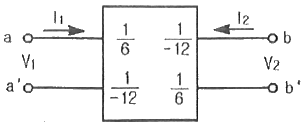
- I1=4A, I2=5A
- I1=5A, I2=4A
- I1=1A, I2=4A
- I1=4A, I2=1A
(정답률: 53%)
31. 다음 중 f(t)=e-at의 z 변환은?
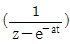
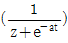
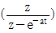
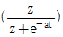
(정답률: 50%)
32. 다음은 시스템의 블록선도이다. 이 시스템이 안정한 시스템이 되기 위한 K의 범위는?
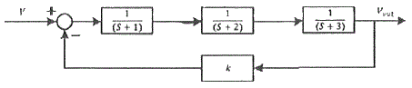
- -6＜K＜60
- 0＜K＜60
- -1＜K＜3
- 0＜K＜3
(정답률: 45%)
33. 다음의 블록선도와 같은 것은?
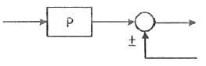
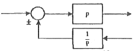
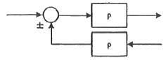
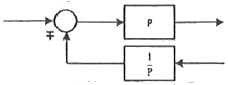
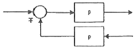
(정답률: 45%)
34. 자동제어계의 기본적 구성에서 제어요소는 무엇으로 구성되는가?
- 비교부와 검출부
- 검출부와 조작부
- 검출부와 조절부
- 조절부와 조작부
(정답률: 38%)
35. 그림과 같은 RC회로에서 전압 vi(t)를 입력으로 하고 전압 v0(t)를 출력으로 할 때 이에 맞는 신호흐름 선도는? (단, 전달함수의 초기값은 0 이다.)
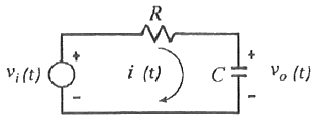
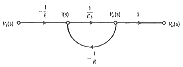
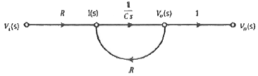
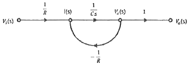
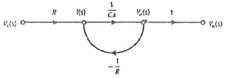
(정답률: 43%)
36. 다음과 같은 계전기회로는 어떤 회로인가?
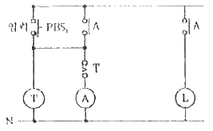
- 쌍안정회로
- 단안정회로
- 인터록회로
- 일치회로
(정답률: 52%)
37. 응답이 최종값이 10%에서 90%까지 되는데 요하는 시간은?
- 상승시간(rising time)
- 지연시간(delay time)
- 응답시간(response time)
- 정정시간(settling time)
(정답률: 64%)
38. f(t)=sint·cost를 라플라스 변환하면?
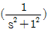
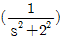
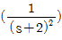
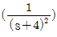
(정답률: 29%)
39.
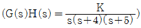
에서 근궤적의 개수는?- 1
- 2
- 3
- 4
(정답률: 50%)
40.
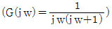
의 나이퀘스트 선도는? (단, K＞0이다.)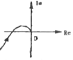
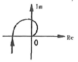
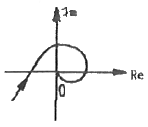
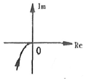
(정답률: 55%)
3과목: 신호기기
41. 다음은 전동 차단기의 설치, 관리에 관한 사항이다. 틀린 것은?
- 제어전압은 정격값의 0.9 ~ 1.2배로 한다.
- 정지할 때는 차단봉에 충격을 주지 않게 회로제어기를 조정 한다.
- 윤활유는 기어의 중간부분까지 닿을 정도로 유지 하여야 한다.
- 차단봉은 전원이 없을 시 자체무게에 의하여 5초 이내에 수평을 유지 하여야 한다.
(정답률: 75%)
42. 전기 선로전환기의 마찰클러치의 역할은?
- 회전속도조절
- 과전류방지
- 전동기보호
- 습기침입방지
(정답률: 66%)
43. 단상 유도전동기의 기동방법 중 브러시가 필요한 구조인 것은?
- 반발 기동형
- 분상 기동형
- 세이딩 코일형
- 콘덴서 기동형
(정답률: 64%)
44. 전동 차단기의 특성에 관한 내용으로 옳은 것은?
- 슬립 전류는 5 A 이하
- 운전 전류는 5.5 A 이하
- 기동 전류는 8.5 A 이하
- 정격 전압은 12 V 이하
(정답률: 67%)
45. 계전기실, 열차집중 제어장치 기계실, 신호 원격 제어장치 및 건널목 AC전원에 대한 접지저항은 몇 Ω 이하로 하는가?
- 3
- 10
- 30
- 100
(정답률: 56%)
46. 신호용 계전기 접점에 대한 설명으로 틀린 것은?
- N은 정위 또는 여자 접점
- C는 공통 접점
- R은 반위 또는 무여자 접점
- N은 가동 접점, C는 고정 접점
(정답률: 70%)
47. 직류 전동기의 회전방향을 바꾸기 위해 결선을 변경하려 한다. 틀린 것은?
- 분권전동기의 경우 전기자 권선만 반대로 접속한다.
- 분권전동기의 경우 계자 권선만을 반대로 접속한다.
- 직권전동기의 경우 전기자 권선만을 반대로 접속한다.
- 복권전동기의 경우 분권계자권선만을 반대로 접속한다.
(정답률: 48%)
48. 전기기계에 있어 히스테리시스손을 감소시키기 위한 방법은?
- 보극 설치
- 규소강판 사용
- 성층철심 사용
- 보상권선 설치
(정답률: 64%)
49. 철도건널목 경보기는 일반적으로 도로의 우측에 설치하여야 하며 경보등의 확인거리는 특수한 경우 이외에는 45m 이상을 확보하며, 직립형 경보등은 등당 1분에 몇 회정도 점멸하여야 하는가?
- 30±10회
- 40±10회
- 50±10회
- 60±10회
(정답률: 72%)
50. 직류 전동기의 기계손과 가장 관계가 깊은 것은?
- 전압
- 전류
- 자속
- 회전수
(정답률: 61%)
51. 변압기 개방회로 시험으로 구할 수 없는 것은?
- 무부하 전류
- 동손
- 철손
- 여자 임피던스
(정답률: 52%)
52. 선로전환기의 개통되는 방향에 따른 정·반위 결정법으로 틀린 것은?
- 본선과 본선 또는 측선과 측선의 경우는 주요한 방향
- 단선에 있어서 상·하 본선은 열차의 진입하는 방향
- 본선과 측선과의 경우에는 측선의 방향
- 본선 또는 측선과 안전 측선의 경우에는 안전 측선의 방향
(정답률: 68%)
53. 60Hz인 3상, 8극 및 2극의 유도전동기를 차동 종속으로 접속하여 운전할 때의 무부하속도(rpm)는?
- 3600
- 1200
- 900
- 720
(정답률: 62%)
54. 정축주파수 60Hz의 농형 3상 유도전동기를 1차 전압은 정격으로 유지하고 50Hz에서 사용하는 경우에 대한 설명으로 틀린 것은?
- 속도가 5/6로 떨어진다.
- 여자전류가 증가하고 역률이 떨어진다.
- 온도 상승이 증가한다.
- 최대 토크가 감소한다.
(정답률: 58%)
55. 변압기의 내부고장 보호에 쓰이는 계전기로 가장 옳은 것은?
- 과전류계전기
- 역상계전기
- 접지계전기
- 부호홀쯔계전기
(정답률: 66%)
56. 직류 직권전동기가 전동차용에 사용되는 이유는?
- 속도가 클 때 토크가 크다.
- 가변속도이고 토크가 작다.
- 토크가 클 때 속도가 작다.
- 불변속도이고 기동 토크가 크다.
(정답률: 62%)
57. 다음 그림(도식) 기호의 명칭은?
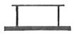
- 삽입형 완방 계전기
- 삽입형 자기유지 계전기
- 거치형 완동 계전기
- 거치형 유극 계전기
(정답률: 74%)
58. 신호용 배전반에 사용되는 변압기의 용도가 잘못 제시된 것은?
- BTr : 자동폐색용
- PTr : 전기선로전환기용
- LTr : 진로선별용
- ITr : 조작반표시등용
(정답률: 48%)
59. 3300V, 60Hz용 변압기의 와류손이 720W이다. 이 변압기를 2750V, 50Hz의 주파수에 사용할 때 와류손(W)은?
- 600
- 500
- 350
- 250
(정답률: 59%)
60. 건널목 전동차단기를 설치하고자 한다. 다음 중 설치위치로 옳은 것은?
- 도로 좌측에 궤도 중심으로부터 차단봉까지 1.8m 위치
- 도로 우측에 궤도 중심으로부터 차단봉까지 1.8m 위치
- 도로 좌측에 궤도 중심으로부터 차단봉까지 2.8m 위치
- 도로 우측에 궤도 중심으로부터 차단봉까지 2.8m 위치
(정답률: 70%)
4과목: 신호공학
61. 신호용 정류기의 정류회로의 무부하 전압이 210[V] 이고, 전부하 전압이 200[V] 일 때 전압변동률[%]은?
- 4
- 5
- 6
- 7
(정답률: 78%)
62. 경부고속철도 레일온도검지장치(RTCP)의 온도별 운전취급 방법으로 거리가 먼 것은?
- 레일온도가 64℃ 이상일 때 : 운행중지
- 레일온도가 60℃ 이상 64℃ 미만일 때 : 70km/h 이하 운전
- 레일온도가 55℃ 이상 60℃ 미만일 때 : 230km/h 이하 운전
- 레일온도가 50℃ 이상 55℃ 미만일 때 : 270km/h 이하운전
(정답률: 70%)
63. 다음 중 신호기의 정위가 다른 것은?
- 유도신호기
- 입환신호기
- 엄호신호기
- 출발신호기
(정답률: 61%)
64. 최고속도 70km/h인 전동열차 운행시 ATS 지상자와 신호기간의 적정한 제어거리[m]는?
- 약 220
- 약 250
- 약 280
- 약 310
(정답률: 52%)
65. 고속선의 운전취급실에서 취급된 제어명령의 연동 논리를 처리하는 장치는?
- 역정보전송장치(FEPOL)
- 연동처리장치(SSI)
- 선로변 기능모듈(TFM)
- 컴퓨터 지원 유지보수 시스템(CAMS)
(정답률: 74%)
66. 삽입형 계전연동장치에서 전철선별계전기를 제어하여 선로전환기의 전환방향을 결정하는 회로는?
- 진로선별회로
- 진로조사회로
- 전철제어회로
- 접근쇄정회로
(정답률: 50%)
67. 열차저항의 종류가 아닌 것은?
- 노반저항
- 주행저항
- 출발저항
- 구배저항
(정답률: 64%)
68. 철도신호 현시방식 중 등렬식 신호기가 아닌 것은?
- 유도 신호기
- 입환 신호기
- 중계 신호기
- 색등식 신호기
(정답률: 67%)
69. 연동도표에 기재할 사항이 아닌 것은?
- 소속선명
- 연동장치종별
- 배선약도
- 운전취급자
(정답률: 73%)
70. 경부고속철도에서 사용하는 ATC 설비에 대한 설명으로 맞는 것은?
- ATC장치의 불연속 정보에는 ATC 지역 폐색의 구배정보가 포함된다.
- ATC장치의 연속 정보에는 양방향 운전 허용 정보가 표함된다.
- ATC장치의 불연속 정보에는 전차선 절연구간정보가 포함된다.
- ATC장치의 연속 정보에는 절대 정지구간 제어가 포함된다.
(정답률: 57%)
71. 경부고속철도구간 전자연동장치(SSI)에 대한 설명으로 거리가 먼 것은?
- SSI 큐비클은 연동논리를 처리하는 연동시스템의 중앙연산기로서 역에 위치한다.
- 연동 프로세싱장치는 상용, 예비의 2중화로 되어 있다.
- SSI 큐비클 1개가 담당할 수 있는 최적의 TFM은 40개이다.
- SSI 큐비클 내 모든 모듈을 진단하고 관리하는 진단모듈을 두고 있다.
(정답률: 48%)
72. 신호 원격제어장치에 공급되는 전원전압은 특별히 정한 것을 제외하고 정격의 몇 [%] 이내이어야 하는가?
- ± 3%
- ± 5%
- ± 7%
- ± 10%
(정답률: 55%)
73. 전철 쇄정 계전기를 나타낸 기호는?
- WLR
- WR
- ZR
- KR
(정답률: 70%)
74. 자동폐색구간에서 최소운전시격에 영향을 주는 요소가 아닌 것은?
- 열차의 제동거리
- 폐색구간의 거리
- 열차 길이
- 역간 거리
(정답률: 58%)
75. 고속철도구간에서 터널경보장치의 터널 내 경보기의 가청거리[m]는?
- 100
- 250
- 350
- 450
(정답률: 65%)
76. 고속선에서 사용하는 FEPOL의 기능이 아닌 것은?
- 원격 제어에서 지역 제어로의 강제 절체
- LCP로 그래픽 기호 전송
- 현장으로부터 기상 검지 정보 수신
- TFM의 기능 진단
(정답률: 44%)
77. 경부고속철도 열차자동제어장치에서 정보전송장치로부터 수신된 불연속 정보를 선로를 따라 설치한 루프코일을 통하여 차상장치로 전송하는 내용이 아닌 것은?
- 각 궤도회로로부터 열차유무 검지
- 터널 진·출입시 차량 내 기밀장치 동작
- 양방향 운전을 허용하기 위한 운행방향 변경
- 절대정지 구간 제어 및 전차선 절연구간 정보 제공
(정답률: 60%)
78. 유럽 각국의 열차제어시스템이 상호 호환이 가능하도록 표준화한 차상신호시스템은?
- LZB
- ZUB Series
- KVB
- ERTMS/ETCS
(정답률: 74%)
79. 열차가 신호기에 진행을 지시하는 현시에 의해 그 진로에 진입한 경우 관계 선로전환기가 있는 모든 궤도회로를 통과할 때까지 그 진로를 쇄정하는 전기쇄정법은?
- 접근쇄정
- 진로쇄정
- 철사쇄정
- 보류쇄정
(정답률: 55%)
80. 전차선 절연구간 예고 지상장치에 대한 설명으로 거리가 먼 것은?
- 지상자는 속도조사식에 의하되 송신기의 출력주파수를 차상장치로 전송하여야 한다.
- 송신기와 지상자 간격은 5m 이내로 설치한다.
- 지상자 설치위치는 ATS 지상자 설치와 동일하게 한다.
- 고장표시반은 송신기 1, 2계의 운용, 동작 상태 및 고장 감시 기능을 가져야 한다.
(정답률: 52%)
"AB=A(A+B)"의 경우, 분배법칙을 이용하여 A와 B를 곱한 후 A를 다시 곱해주면 됩니다.
A(A+B) = AA + AB = A + AB
따라서 AB = A(A+B)가 성립합니다.
"A+B=B+A"와 "A(B+C)=AB+AC"는 각각 교환법칙과 분배법칙입니다.
"A+BC=(A+B)(A+C)"의 경우, 왼쪽 식을 오른쪽으로 전개해보면 다음과 같습니다.
A+BC = A+BA+CA+BC = (A+B)(A+C)
하지만 이 식은 일반적으로 성립하지 않습니다. 예를 들어 A=0, B=1, C=1일 때는 왼쪽 식이 1이고 오른쪽 식이 2가 되기 때문입니다.